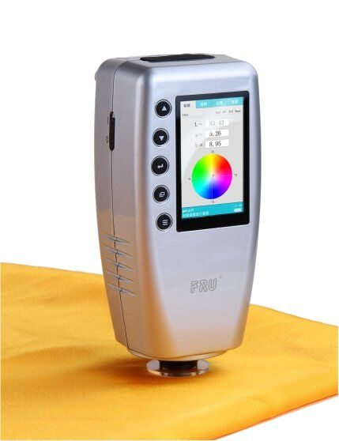

Before we progress into statistical analysis, it's important to recognize the importance of collecting high-quality data. The old admonishment that "garbage in leads to garbage out" applies abundantly to statistical analysis - there is no reason to expect that collecting large amounts of bad data will lead to more reliable results than collecting small amounts of bad data.
Making measurements
The first step in making good measurements is to operationally define our variables. Operational definitions are more than just identification of the variable type and measurement scales - they are detailed definitions of how variables are actually to be measured.
Objective features are the easiest to operationally define. For example, if we wanted to operationally define lengths of snakes that we capture in a field, we would need to include things like:
- Should the snake be measured from the tip of the tail to the tip of the snout? Or should we measure "snout/vent length", which is the distance from the anterior end of the vent (i.e. the excretory opening on its belly) to the snout?
- Should the animal be straightened against a straight edge when the measurements are made? Should it be anesthetized to prevent it from shortening during measurement?
In general, the goal of a good operational definition is to produce measurements that are objective and repeatable. Objective means that the measurements should not require judgment on the part of the researcher - the definition should be so clear that every opportunity for different people to choose to do different things is eliminated, and it becomes unnecessary to make a judgment call. Repeatable means that multiple measurements of the same object will give the same data value.
Operational definitions also typically include information about the equipment used, in case different instruments perform differently when used to make the measurement. If the length of the snake is measured with a rigid ruler the results may be different than if a flexible tape measure is used.
Some variables are intrinsically subjective, like pain levels, colors, tastes, etc., and these are the most difficult variables to operationally define. When subjective variables can't be avoided it is important to be especially careful in operationally defining them.
Consider something as simple as hair color. We can name common colors easily: black, brown, blonde, gray, and red. But, these are not discrete levels, the colors grade into each other, and whether a "strawberry blonde" should be assigned to blonde or red is a judgment call. As a person ages gray hairs are intermixed with their original hair color, and deciding at what point a person is gray-haired instead of their original color again requires a judgment call.
One approach to dealing with subjective variables is to develop a set of standards to compare against. The picture on the left is an example of two pages from a Munsell color book meant to be used to assess the color of soil samples. Each color chip is one of a set of pre-defined standard colors, based on three characteristics: hue (the base color), value (lightness), and chroma (color purity). The tiles on the page in front are all based on Hue 10YR (a yellowish red color), with value decreasing from top to bottom (numbered 8 at the top through 2 at the bottom), and with chroma increasing from left to right (numbered 1 on the left to 8 on the right). Soil samples can be held behind the pages and viewed through the holes, and the color with the closest match is recorded as the color of the soil - for example, a best match to the chip in the upper right corner of the first page would be recorded as 10YR 8/8 to indicate the soil has a hue of 10YR, a value of 8, and a chroma of 8.
Using color chips doesn't completely eliminate judgment calls, but it greatly reduces them. Another approach that is an even more objective way of measuring color is to use a colorimeter, like the portable model shown to the right. Colorimeters are devices that emit a very white light that reflects off of the object being measured, so that the colorimeter can get very accurate measurements of the reflected light's wavelength. Since the colorimeter uses its own light source it eliminates differences in color that might be due to differences in the color of the light in the environment, and thus gives a more objective, repeatable measure of color than would be possible by using color chips. The standard color chips and colorimeter are big improvements for judging pure colors, but mixes of color (such as the salt and pepper hair of a black-haired person who is turning gray) would still require a judgment call.
Regardless of the variable used, though, it is extremely important that variable definitions are as clear and detailed as possible, so that judgment by the observer doesn't affect the data.
Definition of precision and accuracy for single measurements
Once a variable is properly operationally defined, we still need to consider the precision and accuracy of our measurements. You have doubtless heard these terms before, probably with respect to single measurements. We'll review the meaning of these terms as they pertain to single measurements first, and then we will see how they are applied in statistics.
A single measurement is accurate if it is equal to the actual value.
|
Consider this simple example - if we were trying to measure the height of this bush, the measurement would be accurate if we recorded 1 m as the height. A measurement that is not accurate would have a value different from the true height of the bush, but accuracy is not an all or nothing thing; there are degrees of accuracy. For example, even though a measurement of 1.5 wouldn't be accurate, it's more accurate than a measurement of 2 m. The closer a measurement is to the true value the more accurate it is, even if it's not exactly equal to the true value. In this simple example we are only measuring to the nearest 1 m, which is pretty coarse - bushes are not very tall, and measuring to the nearest meter will probably only give us two or three possible measurements (perhaps a 0 for short ones, 1 for medium sized ones, and 2 for tall ones). So, while our measurement of 1 m may be accurate it's not a very satisfactory level of precision. |
For a single measurement, precision refers to the size of the units of measure that we use for making our measurement. Precision is represented by the significant digits that we measure and record.
Instruments differ in the precision of measurement they are capable of. The smallest value the instrument is capable of measuring is the resolution of the instrument, which in turn dictates the upper limit of precision we're capable of achieving with the instrument. To see how resolution affects the precision we are able to achieve, consider the simple example below in which we measure the length of a line.
|
The first ruler has a resolution of 4 cm, the second has a resolution of 1 cm, and the third has a resolution of 0.1 cm (or 1 mm). With the third ruler we can accurately measure the line to 0.1 cm, and measuring to this level we would record the length of the line as 1.6 cm. The second ruler only has hash marks 1 cm apart - we might be able to confidently judge whether the line is closer to the middle or to the hash marks at 1 or 2, in which case we could measure to the nearest 0.5 cm. Trying to record the length down to 0.1 cm would not be reliable, so we would measure the length of the line as 1.5 cm. The top ruler only has hash marks at 4 cm intervals, so we could only reliably measure the line to the nearest 2 cm. We would measure the line as 2 cm long using the top ruler. The resolution of the instrument thus sets the upper limit to
the precision of our measurements - our measurements can't be
more precise than the instrument is capable of. |
Note that each of the measurements above are accurate to the level of precision at which we are measuring. The bottom ruler allows us to be accurate to 1 mm, but a measurement of 1.5 cm is accurate to the 1/2 centimeter level, and the measurement of 2 cm is accurate to the 2 cm level. The finer the resolution of the instrument we use the closer we can get to the actual length of the line.
This way of thinking about accuracy and precision is not how statisticians use the terms, however. When statisticians talk about accuracy and precision, they are describing the properties of collections of measurements, not individual measurements. We will now move on to the statistical meaning of these terms.
Statistical definition of precision and accuracy
From a statistical standpoint, the definitions of accuracy and precision are:
- Accuracy - a collection of measurements are accurate if their average equals the actual value they are measuring. If the average does not equal the actual value, the measurements are biased. Statistically speaking, therefore, bias is synonymous with "not accurate".
- Precision - a collection of measurements is precise if the measurements are close together. You can think of statistical precision as a measure of the repeatability of measurements - when repeated measurements are similar, precision is high. The more variable repeated measurements are, the lower the precision of the measurements is.
|
A common way to illustrate statistical precision and accuracy is with arrow sticks on a target, like in this video. Consider the center of the target to be the true value we are trying to measure, and each x is an attempt to measure it. Run the video, and you'll see that:
|
At the end of the animation the four possible combinations of accuracy and precision are illustrated, with precise clusters of points on the left side, and points that are correct on average (and thus are accurate) along the top row.
Bias is not a character flaw in statistics
Obviously, we would like our data to be both precise and accurate, and the worst case is to be biased and imprecise. Consider, though, that bias is only one of the two ways to make bad measurements! Being a little biased in order to gain a high level of precision may at times be better than being unbiased but with very low repeatability.
This may strike you as odd, because in everyday usage the term "bias" is a word that carries some ethical baggage. We consider "bias" to mean bigoted, closed-minded, or unreasonable. Even in the sciences, we use "bias" as the opposite of "objective" when we use the term outside of our statistical analysis of data, and a biased scientist is one who prejudges issues, or ignores evidence that disagrees with his or her opinions. In statistics, however, bias has a more specific, technical meaning, and statistical bias is not intrinsically worse than low precision.
Choice of measuring instruments
In the real world, different instruments can often be selected for the same task. We need to select instruments that have an appropriate resolution, and that can be applied correctly to the task at hand.
Resolution and the Rule of 30
If we're measuring a continuous variable, the instrument we use will have sufficient resolution if it produces few or no repeated measurements (if we have fewer than 30 observations), or if it produces at least 30 different values in the data set (if we have a sample size greater than 30) - this is the rule of 30. If we abide by this rule we can treat our variable as though it is continuous, even though we know that we have converted it to a discrete variable by measuring to a set level of precision (remember the "implied interval" of our measurements of continuous variables).

Consider this example of measuring the length of teeth in a deer's jaw. The lengths of adult deer teeth generally fall between 90 and 110 mm, which is a range of 20 mm. A ruler with a resolution of 1 mm could only give us 20/1 = 20 possible measurements, which is too few by our rule of 30. Calipers, like the one shown in the picture, can measure to the nearest 0.1 mm, which means there are 20/0.01 = 200 possible different measurements, which is plenty by the rule of 30. Based on the Rule of 30, given the choice between a ruler and calipers, we should use the calipers. |
Usability of the instrument
So, based on the rule of 30 we should use a calipers to measure deer teeth. However, resolution is not the only consideration.
We may find that there are practical problems that prevent us from achieving the maximum precision an instrument is capable of. You can see in the deer tooth example, calipers work by closing the jaws on the object you are measuring. The teeth are still embedded in the deer's jaw, so it's possible to place the top jaw of the calipers on top of the tooth, but the bottom jaw of the calipers is laid next to the base of the tooth. The researcher has to judge by eye where the tooth emerges from the deer's jaw, and there is some personal judgment involved in doing this measurement. Measurements that require personal judgment are problematic, because different observers may select a different point for the base of the tooth. If we are only able to consistently position the calipers within 0.5 mm of the base of the tooth, then our measurements are actually only accurate to 0.5 mm, even though the resolution of the instrument is 0.1 mm.
This is not ideal, but a ruler would probably be even worse, as it would have to be laid across the tooth, and the top and bottom would both have to be judged by the researcher. So, the calipers have an edge over a ruler based both on the rule of 30 and on usability, and thus calipers are better tools for this task.
Causes of measurement variation
Variation in measurements leads to lower precision (in the statistical sense of lower repeatability), and in general we want to be as precise as possible. It's desirable to reduce the variability in our measurements, but to do so we need to be aware of the causes of variation.
There are many causes of variation in data, but common ones include:
- Natural, biological variation among objects.
- Difficulty in using the measurement instrument.
- Inter-observer effects.
Natural variation in measurements is not under our control, and is an intrinsic part of studying biological organisms. This is the only variation in our data that is a real property of the organisms we are studying. There are things we can do to minimize natural variation in our data (which we will discuss in greater detail when we talk about experimental design), but we won't ever eliminate natural variation from our data. The second and third causes of variation are under our control, though, and we would like to minimize or eliminate them.
The second cause (difficulty in using the instrument) was mentioned above - a caliper may be difficult to use to measure the length of a tooth. We can minimize this source of variation by selecting instruments that are well suited to the task at hand.
The third cause, inter-observer effects, are differences from person to person in how a measurement is made. This "inter-observer variability" is a potentially major problem, and we should expect to have problems with inter-observer effects any time personal judgment is needed to make measurements. For example, colors, types of behaviors, and qualitative categories (such as "warm", "cloudy", "comfortable", etc.) are notoriously difficult to standardize among observers. Quantitative measurements are easier to standardize, requiring only that every observer uses the same instruments and follows the same protocols, and are preferred to qualitative ones. However, bear in mind that even quantitative measurements can result in inter-observer effects if you don't carefully define the quantity you are measuring, devise protocols for measuring the quantity, and train all observers to follow these protocols exactly.
Precision and accuracy activity
|
In Friday's activity we will be measuring two objects, plastic worms and snail shells. We will measure each object with two different scientific instruments (calipers and rulers). Based on our measurements we will determine two things: |
Accuracy – can you use a caliper and a ruler equally effectively to measure both worm length and shell diameter? Should an instrument be avoided for one or the other object? Do the instruments allow unbiased measurements of both objects?
Precision – how repeatable are the measurements? Are both objects equally easy to measure precisely? Are we able to achieve the maximum possible precision (as determined by the instrument) in our measurements of each object? How many significant digits should we record, given our ability to get the same measurement from the same object in repeated attempts?